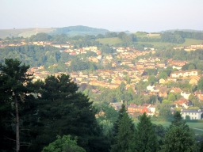
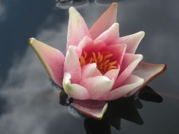
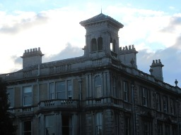
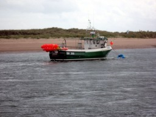
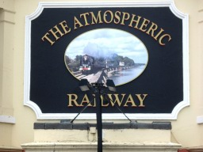
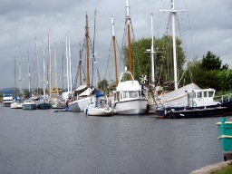
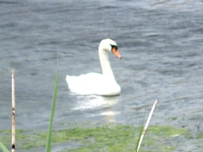
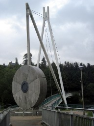

BCC23, Exeter, 3–8 July 2011
Sunday 3 July
At 2pm I was ready to leave the house, so set off. Since the tubes were
rather crowded, I decided to take the Central Line all the way to Lancaster
Gate. I walked through Bethnal Green Gardens on my way to the tube station.
A train was pulling in as I reached the platform, but I managed to get a
seat.
At Lancaster Gate I took the 78 steps rather than waiting for the lift; they
are not a problem, since there are long level stretches between some flights.
Then walked to Paddington, on a route familiar enough that I didn't have to
stop and think: this was a backup route to Paddington when the
Hammersmith & City line was having problems.
The first ticket machine I found was out of order, but the second one worked,
and I had my tickets with an hour and a quarter to spare before the train
left. With some difficulty I found a seat, and got on with the first instalment
of my diary.
I typed Sunday 3 July, then looked back and found that it said
Snday 3 Jly. So I went back and tried again. No matter how hard I
pounded on the U key, nothing resulted. Disaster, I thought, I need
two us to ssh to my account in
London. Then I realised I could do it with copy and paste: copy a u from
another file, and then just type Shift-Insert to put it in the text.
Capitalising is fairly painless in vi as well. So I suppose I shall cope,
though it does look as if the white toy is finally on its way out.
I typed for a while, and when I looked at the screens half an hour before
departure, the platform was already announced, so I went and took my seat.
Small comment on the TrainLine: I asked for a forward-facing window seat with
a power socket; they got two out of three.
A pleasant journey down. I worked for a while, then read for a while, then
looked out of the window. I saw two largish birds of prey over Somerset,
gulls above Taunton, a green woodpecker in a field. Many people were out
walking. I saw Glastonbury in the distance, and a pseudo-Glastonbury much
closer approaching Taunton. There were cirrus clouds in the sky.
Right on time the train arrived. I got out and found the coach. Only three
other people came, a Korean couple and a German girl, none of whom I knew.
Michael Brough walked past, not seeing my gestures, and set off up the hill.
Eventually the coach set off, ground its way up the hill (passing Michael),
and stopped at Holland Hall. I got my room key and dumped my stuff, then
found Robin on the checkin desk where I picked up the conference material.
He told me that I needed a username and password from reception. So I ate,
and then went back to get it.
There were far too many old friends for me to attempt listing them at dinner,
and sitting outside afterwards watching the sunset and drinking beer. A tiny
sliver of moon hung in the sky as it darkened. Robert Bailey assumed that,
as he was simply "Bailey" in the programme, the other R. Bailey was
not here. I stayed a bit longer than perhaps I should have, but got back to
my room shortly after ten, ready for bed. But having noticed that the
conference finished by teatime, I went online and bought a cheap ticket home
on Friday evening.
Monday 4 July
|
The sunlight woke me early. It made a lovely sight on the houses on the other
side of the valley. But I closed the curtain and got back into bed and slept
a bit more.
Then I got up and showered, and looked up the two ferries before breakfast.
Both run to regular timetables, so this is definitely an option for the walk.
I didn't check train times yet.
Breakfast: full English, as you would expect; but at least there was fruit
and mini Danish pastries.
|

|
Two lovely plenary talks, by Peter Keevash on "Hypergraph Turán
problems", and by Koen Thas on "Order in building theory", which included
both an account of GQs with one parameter finite and the other infinite
(a game started by Tits but where it seems I got the first actual result)
and geometry over the "field of one element", which has rapidly become one
of the most tantalising mathematical mysteries of today.
I was also cited as the originator of the subject of two consecutive
contributed talks, by Mike Grannell, on the analogue of Jacobson–Matthews
for Steiner triple systems (which has Andy as a joint author), and by Andrea
Burgess on what happens when you replace my generalised t-designs by
"generalised packing designs" (what happens is that all kinds of other things
including Howell designs provide examples) (this is joint with Robert Bailey).
I also talked to the Springer lady about revising Sets, Logic and
Categories, and bought a book about Laplacian eigenvalues from her.
Then I was so sleepy that I had to go back to my room for a quick crash before
the reception.
There was a bit of a contretemps when the organisers had got in real ale and
had planned to give everyone a half pint at the reception, but the bar staff
were under the impression that it was a pint each. So the first lucky few got
double rations.
After dinner, one of the bar staff said that the broached keg wouldn't keep,
so Bridget asked him to give it out for the cost of corkage (a pound a pint).
A queue quickly formed, but only two pints could be squeezed out of the
barrel. I lost out again; I was second in the queue, but the first barman
thought he could only get one pint, so I bought myself a bottle of beer; then
another barman came and managed to get another pint out.
At dinner, one of the other groups had been "dipterists". When I went out
onto the terrace, people were wondering what these were. I guessed "people
with two wings". But Klas had a smart phone, so looked it up for us; it
turns out that they are people who study diptera, i.e. flies.
The sun went behind a cloud and it grew cold; I decided to turn in.
Tuesday 5 July
|
I woke early again, had breakfast, and set out on a cool, drizzly morning, for
the lecture theatre. Not quite wet enough to get out my waterproof.
Another lovely plenary talk by Mireille Bousquet-Mélou on counting
planar maps. Unfortunately, I couldn't stay awake. As I drifted in and out,
I kept thinking that there were two security men standing behind her as she
talked, or that a film was being projected onto the whiteboard.
|

|
After coffee I was in slightly better shape and enjoyed Robert's talk in the
main room. After that I went to some random stuff, Bridget on patterns of
colours on leaves of trees, a Hungarian on q-analogues of constant
term identities, and Carrie Rutherford on some work she is doing with Murad
Banaji (who is now in Portsmouth, it seems).
After lunch with the South Africans, back for Vladimir Nikiforov's talk.
Potentially very interesting, using largest eigenvalue in place of average
degree in extremal graph theory, though I couldn't easily make connections.
(He tells me that his most recent work is on graphs which are close to being
strongly regular, in the sense that the variance of the number of common
neighbours of adjacent pairs of vertices is small, and similarly for
non-adjacent pairs.
In the middle of the talk, what passes for a fire alarm in these parts
interrupted the lecture: a very reassuring recorded male voice saying that
because of circumstances beyond our control we had to evacuate the building.
After about fifteen minutes (with no fire brigade and no sign of urgency
from anyone) they allowed us back in, and the lecture continued, though
Vladimir had lost his rhythm and went too fast.
Then the business meeting, which was quite short: the only contentious items
were why the present organisers had not provided a list of delegates, and
why nothing had been done about the thesis prize. We finished in good time,
so a long tea break.
Then my talk, which went well; I finished a couple of minutes early, as I had
expected, but I think people understood it and were entertained. Then off
to hear Alia, who talked about A- and D-optimality for block size 3 and
v = 2b, which was nothing new to me. Finally back
to the main room for a talk on the 1-2-3 problem, and a talk by Nick Gill
entitled "Is Babai afraid of spiders?"
|
After dinner it was time for the concert. My voice was still not in good
shape, and I was rather glad that I'd had the forethought to leave my
guitar behind.
I walked over with Michael Giudici, and we took a turn around the lovely
landscaped gardens round the Italianate Victorian pile which was Reed Hall,
where the concert was. Strange terraces, statuary, rhododendrons and other
gloomy plants, fountains, Latin inscriptions, etc. In the entrance hall
there was a faded page from an ancient Country Life displayed in
a frame. There was, however, a bar.
|

|
The concert itself was a rather odd affair. It featured a lot
of David Penman, first accompanying Tim Hetherington on the piano (not very
well) as Tim played the Trumpet Voluntary, then reading a description of
Dartmoor from The Hound of the Baskervilles so that people on the
excursion would know what they were in for, then giving us our art appreciation
class on the Elizabethan miniaturist Nicholas Hilliard, who was born in
Exeter. But the person who made the concert work was Bruce Sagan. He had
combined a trip to the conference with a tour by his morris dancing group;
he played us a couple of morris tunes and led us in some drinking songs,
and finished the concert by performing in a Boccherini duo, rather
unrehearsed but not bad in spite.
Then it was bedtime.
Wednesday 6 July
Breakfast, and out to the conference, feeling a little less under the weather
than heretofore.
The invited talk was an extraordinary performance by Bruce Sagan. He realised
that what he was talking about wasn't everybody's cup of tea, so he went
really slowly, explaining everything and doing lots of examples. He has
mastered the art of cross-referencing in Beamer, so he can quote a lemma and
with one click take us to the statement of the lemma, then with another click
take us back to the current point. Of course, for me, the result was that he
never got to the really interesting stuff. So I will just have to read the
paper.
Then contributed talks including Simon Blackburn, on the probability that two
random elements of a group are conjugate; Andy Drizen (who gave a nice talk
but went a bit fast); and Bill Martin (who called his conjecture that
Q-polynomial schemes with irrational eigenvalues are imprimitive the
"Sensible Caveman Conjecture").
|
After lunch, the excursion departed for Castle Drogo, while I went out for
my pre-planned walk (nobody else wanted to come along). I walked down to the
station and took the train to Exmouth, then walked to the harbour (which took
a little bit of finding) and took the
Starcross ferry. We had a good view of the sandy spit from Dawlish which
almost blocks the estuary. The tide was ebbing fast. A couple of cormorants
flew low over the water. Among the gin palaces were some real fishing trawlers.
However, the buildings around the harbour (or should I say marina?) were
modern quayside living.
|

|
|
After twenty-five minutes we docked at Starcross. Then we had to walk
along the station platform and through the pub carpark to escape. Well made
cycle track, then a small and fairly quiet road (though the traffic on it
tended to be large 4-wheel drives) past Powderham Castle, home of the Earls of
Devon, where a large field was laid out with marquees and facilities for
playing some sport on an industrial scale.
|

|
|
I had a quick look round Powderham church. The door was locked, but the
churchyard had a fine stand of yews; under the yews were people ranging from
a former proprietor of Powderham Castle to a woman described as daughter of
a man "of Melbourne, Australia". The path continued past some cows, and
then crossed the railway line to go along the top of the sea wall. The tide
was out by now, and on the vast mudflats was little in the way of birdlife
except crows and black-headed gulls with the occasional swan and cormorant.
|

|
|
I came to the bottom lock of the ship canal, with the Turf pub, the terminus
of the second ferry. Rather inaccessible except by ferry. I had some way to go,
so passed by without stopping and went on along the towpath. It was a wide,
well-maintained canal with lots of vegetation and
a towpath in excellent condition. Cyclists on National Cycle Network Route 2
were segregated on a tarmac path at the bottom of the bank.
|
 |
|
There was not a great deal of wildlife to see on this bit either, and it was
fresh rather than salt water. I passed a group
of three ducks: one dark (a nearly-black mallard), one light (white with a
touch of brown), and one a mixture of the other two. There was also a
solitary swan.
|
 |
|
Up till now, the weather had been a mixture of sun, wind and rain; but now
the rain started in earnest and continued for the rest of the walk. It got
so heavy I had to take my glasses off, so the walk was a bit of a blur.
Eventually I spotted the cathedral looming through the clouds, and guessed
that I had reached Exeter, but I still had a fair way to go. The river in the
city was populated with huge flocks of swans. Eventally I decided to cross
the river, by an interesting bridge suspended from one pylon, counterweighted
by what appeared to be a huge millstone. By the time I
got back to Holland Hall I was completely drenched; at that moment the rain
stopped and a weak sun came out.
|

|
So I went back to my room, had a nice hot shower, and changed for dinner.
After dinner we had the committee meeting, helped along by a cask of beer and
a few goodies Bridget had brought. We were finished the rather difficult
business (primarily choosing speakers for the next conference) by 10:30, and
had time for a nightcap before bed.
Thursday 7 July
I was a bit sleepy in the morning, but Ian Wanless gave a lovely plenary talk,
with the gimmick of keeping us awake by having one half of the room cheering
for theorems and the other half for conjectures.
After coffee I went to a couple of talks, but sat out two and had some
conversations with various people, mostly about my talk. A couple of people,
notably Brendan McKay and Nick Gill, tried to persuade me that a different
approach would be better. This just makes me stubborn. Because of the
relatively small number of papers submitted, Keith decided to put back the
deadline by a couple of weeks. So if I can actually prove something, I could
still write it up and submit it.
After lunch I prepared a few problems for the problem session, in case things
were slow, which involved a bit of searching since I couldn't actually remember
whether I had posed them before. Amazingly it seems that I never did get
around to posing the α+n conjecture at the BCC.
Paul Goldberg also gave a lovely talk about the computational complexity of
finding Nash equilibria. Of course I had heard Jack Edmonds and Kathie
Cameron talk about this in Paris, but the treatment could hardly have been
more different. He had many lovely pictures to help explain the situation, too.
Then we had the problem session. After a little glitch when we couldn't get
the lights on the document camera to work, we were away. I started off with
a problem on power graphs, just to get the camera focussed. Then they came
thick and fast until just before the end, when I managed to sneak in another
problem (on combinatorial representations) to close the session. I have quite
a big bundle to edit.
After tea there were three more talks; I went to hear Geoff Walsh, who had
discussed his work with me in Dublin, and Aylin, who went a bit too fast
(she was nervous but didn't show it), and finished the day with a talk by
Bill Jackson, a very characteristic performance.
Then time for a short rest and change of clothes before dinner. At this
point I realised (why hadn't I seen this before?) that any maximal
non-synchronizing monoid is the endomorphism monoid of a graph with clique
number equal to chromatic number. It seemed that my approach is definitely
in good shape, and I could write a paper for the proceedings.
It was warm
on the terrace until the sun went behind a cloud, at which point it was time
to go to eat. Very good food for a conference dinner – the soup
in particular absolutely delicious, and nice seedy bread – and a band
(accordion, fiddle and double bass) playing gentle music throughout. After
the meal, James Hirschfeld suggested that I should make a speech; I did, but
kept it very short, and there was no follow-up.
Then the band started playing, and Sophie came over and dragged me onto the
floor. They thought they were just doing a soundcheck, but there were several
couples dancing by the end of it, and when they went into the first proper
dance the floor was packed. And so it went on; I think the band themselves
were quite amazed by how willing people were to get up and dance.
By 11, I was wilting, and went off to bed.
Friday 8 July
I was sleepy this morning. The BCC is always tiring because I am never quite
off duty, and the cold hasn't helped. But I got up in good time for
breakfast, and then packed and left my bag in the bar at Holland Hall and
made my way over to the conference venue.
As expected, Mark Walters (who had been designated the Rado Lecturer at very
short notice) gave a lovely lecture, giving very clearly the ideas behind
the theorems without straining too hard for the very best constants.
After coffee, I went to a couple of talks, and also spent some time talking
to various people about various things including some of the problems posed
in the problem session.
After lunch, when we reconvened for Andrew Thomason's talk, there was a feeling
of winding down, although there was still good attendance. I am afraid that
once again I fell asleep in the talk, but heard enough to know that I need
to know more. (How fortunate that we have the book!) He has a method which
potentially counts the graphs in a hereditary class, and also gives
information about the number of graphs which can be vertex-partitioned into
a given number of graphs in the class, and of the maximum edit distance of
an arbitrary graph from the class.
Since tea was earlier than usual, the staff were caught on the hop a bit. I
hung around, having tea and saying goodbyes, and eventually wandered off to
get the shuttle bus to the station. (I had wondered about walking into town
to see it, but the inclement weather and my tiredness conspired against this.)
I had a long wait for the train, so bought a paper. It had pages about the
demise of the News of the World, in which I had no interest. But
before I had finished reading it, Carrie, Tony and Debbie showed up, and we
had a long conversation until it was time for various trains to carry us all
away.